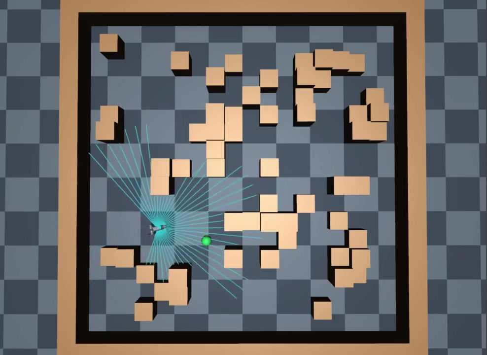

41 束激光
局部障碍距离
LEARNING-BASED NAVIGATION
在 MuJoCo 障碍环境中，以激光与目标观测学习导航，并接入 CBF 动作修正。
我的工作基于 SEA-Nav，构建导航仿真环境并组织策略训练。

MuJoCo 仿真 · Go2 障碍环境导航
SYSTEM / 整体框架
策略生成速度指令，经 CBF 修正后交给冻结的 SLR 运动控制器。
局部障碍距离
机器人坐标系下的目标
导航状态与运动信息
提取历史观测特征
输出平移与转向指令
利用距离约束修正动作
执行速度，返回新观测
采集当前策略轨迹，更新 PPO
METHOD / 训练思路
让策略在不同障碍布局和感知扰动下学习导航行为。
随机障碍与目标采样，生成激光观测；碰撞检测和自动重置支撑连续训练。
奖励围绕目标趋近、方向引导和任务终止设计，PPO 学习导航速度策略。
加入感知延迟与噪声；碰撞后恢复历史状态，用当前策略采集新轨迹。
DEMO / MuJoCo 仿真
训练演示视频展示 Go2 在障碍环境中的运动过程。
MuJoCo 仿真 · 导航策略运行过程
激光距离与局部目标共同输入导航策略。
观察障碍附近的转向与绕行，以及目标方向上的运动。
上层生成导航速度，底层四足控制器执行运动。